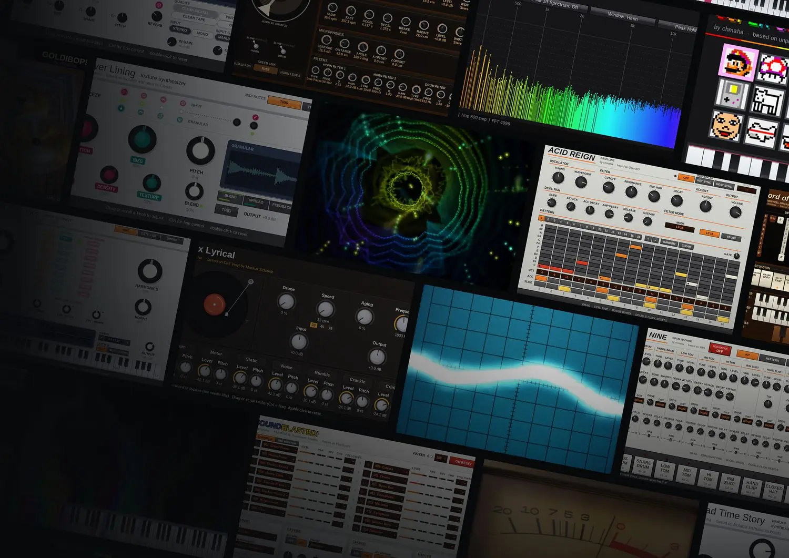

Acid Reign
A TB-303-style acid bass with the Devil Fish mods and a 16-pattern sequencer.
Based on Open303

200 free plugins for REAPER. Synths, pianos, orchestras, drum machines, tape, reverbs, meters, spatial audio and a room full of games, ported from open-source DSP and running natively as JSFX on every platform REAPER runs on.
Two ways to get everything. Pick one, not both.
Keeps every plugin up to date, and installs only the ones you want.
https://github.com/chmaha/DSP-Ports-JSFX/raw/main/index.xmlReaPack also installs each plugin's Dependencies files (samples, impulse responses, tables).
Download a bundle and open it in REAPER. Each installs a whole set with its files.
The plugins appear under JS: DSP to JSFX/Plugin Ports. Bundles don't update themselves: grab the newer one when it comes out.
New here? The manual gives a quick start to every plugin's controls, with screenshots.
Read the manual (PDF)Synths, samplers, organs and drum machines. Put one on a track, send it MIDI and play.
A TB-303-style acid bass with the Devil Fish mods and a 16-pattern sequencer.
Based on Open303
A Commodore 64 SID chip with step tables, arpeggios and drums, for chiptunes from the piano roll.
Based on reSID (Dag Lem)
A Casio VL-1: pocket keyboard, rhythm box and calculator, with your own sound codes.
Based on KoniSynth (k0n1m4k1) and the PolyValens VL-1 emulator
Captain's Kit, Led Head, Goldibops and Busk Stop. Click the photo to hear each piece.
Based on avldrums.lv2, with samples from Glen MacArthur's AVL Drumkits
A four-operator wavetable FM synth that plays a chord of up to seven notes per key.
Based on Valley Dexter (Dale Johnson)
A sampled bright electric bass with four articulations and a distortion layer.
Based on the sfizz engine, playing Jeff Glatt's No Budget Band Bright Rick samples
A five-stop pipe organ with 80 historical temperaments.
Based on Aeolus
Records what it hears and plays it back from the keyboard as clouds of grains.
Original design
A polyphonic subtractive synth with a looping envelope and up to 16 voices.
Based on Valley Interzone (Dale Johnson)
The sound chips of six game consoles, from the NES to the Super NES.
Based on Nes_Snd_Emu, MAME, ymfm and snes_spc
An experimental text-to-speech toy: three vintage speech engines that speak or sing MIDI text.
Based on SAM (Sebastian Macke's C version), rsynth's Klatt synthesizer and Flite
A drum synthesizer with eleven voices and a 16-pattern step sequencer.
Based on 9W9
An always-on additive drone of up to 16 oscillator pairs, tuned to a scale.
Based on 4ms Ensemble Oscillator (CoreModules)
Eight-slot orchestral brass, from solo trumpet to tuba, with every articulation on key switches.
Based on the sfizz engine, playing Sonatina Symphonic Orchestra v4 (Mattias Westlund, Peter Eastman and contributors)
A mixed or large choir singing a sustained "ah", with mod wheel or velocity dynamics.
Based on the sfizz engine, playing Sonatina Symphonic Orchestra v4 (Mattias Westlund, Peter Eastman and contributors)
Five brass sections from tuba to trumpets, blended across the keyboard for sketching.
Based on the sfizz engine, playing Sonatina Symphonic Orchestra v4 (Mattias Westlund, Peter Eastman and contributors)
A sampled string ensemble with seven key-switched articulations.
Based on the sfizz engine, playing S. Christian Collins' SCC Expressive Strings
Six woodwind sections from contrabassoon to piccolo, blended across the keyboard for sketching.
Based on the sfizz engine, playing Sonatina Symphonic Orchestra v4 (Mattias Westlund, Peter Eastman and contributors)
A concert harp over the full range, Cb1 to G#7.
Based on the sfizz engine, playing Sonatina Symphonic Orchestra v4 (Mattias Westlund, Peter Eastman and contributors)
Grand piano, harpsichord and a 14-stop church organ in eight multi-timbral slots.
Based on the sfizz engine, playing Sonatina Symphonic Orchestra v4 (Mattias Westlund, Peter Eastman and contributors)
Timpani, drums, cymbals and tuned percussion, from glockenspiel to chimes, in eight slots.
Based on the sfizz engine, playing Sonatina Symphonic Orchestra v4 (Mattias Westlund, Peter Eastman and contributors)
Eight-slot string sections and soloists with every articulation on key switches.
Based on the sfizz engine, playing Sonatina Symphonic Orchestra v4 (Mattias Westlund, Peter Eastman and contributors)
Eight-slot woodwinds, from piccolo to contrabassoon, with every articulation on key switches.
Based on the sfizz engine, playing Sonatina Symphonic Orchestra v4 (Mattias Westlund, Peter Eastman and contributors)
A sampled fingered electric bass with six articulations, slap and pop included.
Based on the sfizz engine, playing Jeff Glatt's No Budget Band Fender Finger samples
A physically modelled tine electric piano with four voicings, pan vibrato and half-pedalling.
Based on Frodhes (Leonardo Mirabal)
Four sampled electric guitars with chords, articulations, amp feedback and vibrato controls.
Based on the sfizz engine, playing Karoryfer's Emilyguitar, Shinyguitar and Black And Green Guitars samples
A waveguide gong you strike with MIDI notes, the mouse or audio.
Based on swh-plugins Gong model and Gong beater (Steve Harris)
A sampled vibraphone with vibrato on the mod wheel and aftertouch, and half-pedalling.
Based on the sfizz engine, playing the Music Sample Library Project's MSLP Vibes
A sampled Yamaha CP80 electric grand with half-pedalling.
Based on the sfizz engine, playing Greg Sullivan's CP80 samples
A two-oscillator subtractive synth with a ten-slot modulation matrix, in mono or eight-voice poly.
Based on Calf Monosynth (Krzysztof Foltman, Calf Studio Gear)
An 8-bit hybrid monosynth with a modulation matrix, a step sequencer and 16 effects.
Based on Mutable Instruments Shruthi-1 and its DSP filter board (Emilie Gillet)
Bow, blow and strike exciters feeding a modal resonator.
Based on Mutable Instruments Elements
A subtractive synth with 28 factory banks and a 128-slot user bank.
Based on amsynth
A DX7-style FM synth with 1056 voices and a full voice editor.
Based on Dexed
Fifteen taiko drums and hits on key pairs, made for rolling.
Based on the sfizz engine, playing S. Christian Collins' SCC Taiko Drums
A TR-808, CR-78 and Mini Pops 7 rhythm machine with 29 patterns and your own rhythms.
Based on Mz808 (Simon Moscrop), calibrated against Michael Fischer's recordings of a real TR-808, and KoniSynth (k0n1m4k1)
A 16-voice wavetable synth with 64 ROM banks, phase shapers, enhancers and a lowpass gate.
Based on Valley Terrorform (Dale Johnson)
A tonewheel organ with drawbars, percussion and a rotary speaker.
Based on setBfree
A 16-channel General MIDI wavetable synthesizer.
Based on Sonivox EAS
Mandolin meets harpsichord: four plucked ranks coupled like harpsichord registers.
Based on the sfizz engine, playing chmaha's Mandochord SFZ library (samples by John Maddock)
The OPL, OPL2 and OPL3 FM chips of the AdLib and Sound Blaster, with General MIDI as Doom played it.
Based on KoniSynth (k0n1m4k1), with sneakernets' DMXOPL3 bank
A sampled Wurlitzer EP200 reed piano with half-pedalling.
Based on the sfizz engine, playing Greg Sullivan's Wurlitzer EP200 samples
A PADsynth pad synthesizer with smeared harmonics, long wavetables and 107 ready-made sounds.
Based on the PADsynth engine of ZynAddSubFX
Additive synthesis with up to eight voices per note and 141 ready-made sounds.
Based on the ADsynth engine of ZynAddSubFX
24 synthesis models in one macro oscillator.
Based on Mutable Instruments Plaits
A resonator that turns notes or audio into strings, bells and plates.
Based on Mutable Instruments Rings
Harmonicas, ocarinas, baroque recorders and didgeridoo in eight slots.
Based on the sfizz engine, playing the Versilian Community Sample Library (Versilian Studios and contributors, SFZ by Peter Eastman)
Hand drums, shakers, bells and sound effects in eight slots, every key named.
Based on the sfizz engine, playing the Versilian Community Sample Library (Versilian Studios and contributors, SFZ by Peter Eastman)
Five harpsichords, English, Flemish, French, Italian and one by an unknown maker.
Based on the sfizz engine, playing the Versilian Community Sample Library (Versilian Studios and contributors, SFZ by Peter Eastman)
Knight and Yamaha upright pianos with half-pedalling.
Based on the sfizz engine, playing the Versilian Community Sample Library (Versilian Studios and contributors, SFZ by Peter Eastman)
Kalimbas, mbiras, dan tranh, psaltery, folk harp, balafon and more in eight slots.
Based on the sfizz engine, playing the Versilian Community Sample Library (Versilian Studios and contributors, SFZ by Peter Eastman)
Sampled soprano, alto, tenor and baritone saxophones with legato, vibrato and breath noises.
Based on the sfizz engine, playing the MTG Solo Sax samples (Music Technology Group, programmed by kinwie)
Two 16-channel SoundFont synths with reverb, chorus and historical temperaments.
Based on FluidSynth, with GeneralUser GS and HL4MGM
A six-voice polysynth with two engines, 256 factory patches, chorus and an arpeggiator.
Based on Ultramaster KR-106 (Karl LaRocca and David Mansfield)
An FM drum and a modal djembe, played from MIDI.
Based on 4ms Drum and Djembe (CoreModules)
47 synthesis models in one macro oscillator, bit for bit.
Based on Mutable Instruments Braids
A sampled Hohner Pianet T, with key-release samples and half-pedalling.
Based on the sfizz engine, playing Greg Sullivan's Pianet T samples
A sampled Yamaha CP70 electric grand with two round-robin sets and half-pedalling.
Based on the sfizz engine, playing Conner Sawchuk's David's CP70 samples
An Omnichord-style chord harp: chord buttons, a strum plate, rhythms and auto bass.
Based on KoniSynth (k0n1m4k1)
A little sampler with fifteen sounds, played from B3 to G5.
Based on unplugred's MPaint
A sampled Hohner Clavinet with four velocity layers, key-release clunks and half-pedalling.
Based on the sfizz engine, playing Jeff Learman's Stevie Clavinet samples (original source unknown)
Four instruments in one: Piano, ePiano, JX10 and DX10.
Based on the mda plugins
A sampled 1977 stage tine piano with tremolo, autopan and half-pedalling.
Based on the sfizz engine, playing Jeff Learman's jRhodes3d samples
A sampled concert grand with resonance, pedal noises and half-pedalling.
Based on the sfizz engine, playing the Little Lizard edition of Alexander Holm's Salamander Grand
An electric piano with six hidden ear-training games.
Based on Ardour's ACE Reasonable Synth
A physically modelled Wurlitzer 200A, from the reeds to the speaker.
Based on OpenWurli (hal0zer0)
EQ, dynamics, tape, space and some stranger things for the tracks you already have.
Five broad bands and an air shelf.
Based on Luftikus (lkjb)
Tape stop and tape start, on cue.
Based on cStop
Pulls pitch to the notes you choose, from a scale, the keyboard or live MIDI.
Based on x42 fat1 (zita-at1)
Three bands, each with its own distortion.
Based on mda Bandisto
Turns a track's audio into a cloud of grains.
Based on Mutable Instruments Beads
Replaces hat, kick and snare with built-in or recorded hits.
Based on mda BeatBox
Analog console colour for every channel, bus and the master.
Original design
A convolution reverb with 134 programs captured from a Bricasti M7.
Based on the x42 Convolver (Robin Gareus), playing Samplicity's M7 impulse responses
Six bands of downward expansion to take steady noise down.
Original design
Drive, bias and seven speaker cabinets.
Based on mda Combo
A voice-tracking carrier, ready for a vocoder.
Based on mda VocInput
Saturation, filters, two compressors, EQ, console and output stage in one strip.
Based on AnalogChannel (Filippo Terenzi)
Automatic double tracking.
Based on ADT (Christopher Arndt)
A compressor with a live transfer curve or level history.
Based on x42 darc
An oscillator, ring mod or EQ that follows the pitch.
Based on mda Tracker
Cuts your audio into repeats, stutters, rolls and fills, in time.
Based on LiveCut Enhanced (Remy Muller, dadda123, Xenodimensional)
A vintage-flavoured stereo chorus with 16 factory presets.
Based on Classic Chorus RE-01 (AnClark Liu)
Tames sibilance, and lets you hear what it removes.
Based on Airwindows DeEss and DeBess
A straightforward delay with tempo sync.
Based on ZamDelay
A rotary speaker with separate horn and drum.
Based on b_whirl from setBfree
A dub delay you can push past 100% feedback.
Based on mda DubDelay
A tilt EQ whose slope follows the signal.
Original design
Eight nodes, set directly on the graph.
Based on x42 fil4
One knob, a brick wall and two rows of LEDs.
Based on Classic Master Limiter RE-01 (AnClark Liu)
Warm, Space and Punch.
Based on ReFine (lkjb)
A gate that can also duck, with sidechain.
Based on ZamGateX2
A vactrol low pass gate, opened by a knob or struck by MIDI notes.
Based on 4ms LPG (CoreModules)
The famous gold overdrive, as a circuit model or a neural network.
Based on ChowCentaur (Jatin Chowdhury)
Patch up to eight of 106 swh-plugins together with cables.
Based on swh-plugins (Steve Harris)
An algorithmic reverb for huge spaces, thick pads and modulated echoes.
Based on Cloud Seed 2.0 (Ghost Note Audio)
A vintage-flavoured algorithmic reverb with 25 factory presets.
Based on Classic Reverb RE-01 (AnClark Liu)
Four knobs of extra loudness and density.
Based on RCInflator2
A compressor working on every frequency band.
Based on Spectral Compressor
A vintage-flavoured stereo flanger with 9 factory presets.
Based on Classic Flanger RE-01 (AnClark Liu)
I, I+II or II. Pick a mode, set the tone.
Based on junologue-chorus (Peter Allwin)
A 4 to 12 stage stereo phaser with 15 factory presets.
Based on Classic Phaser RE-01 (AnClark Liu)
A limiter with optional inter-sample peak limiting.
Based on x42 dpl
Make a synth talk, with a talk box or a vocoder.
Based on mda TalkBox and Vocoder
Two looping delays with hold and reverse.
Based on 4ms Dual Looping Delay (CoreModules)
A live looper with up to 200 seconds of memory.
Based on mda Looplex
A stereo 2- or 4-pole OTA lowpass or bandpass filter with drive and left/right cutoff spacing.
Based on Valley Feline (Dale Johnson)
Tape, filters, gate, EQ, compressor, saturation and limiter in one plugin.
Based on the ports in this collection
Release, Threshold and Ceiling.
Based on ZaMaximX2
Oscillators, ring modulators and three bands of drive, filter and delay.
Based on Hermes Filter from swh-plugins (Steve Harris)
A stereo signal combiner: ring mods, min/max, crossfades and bit-logic glitches of two inputs.
Based on Valley Amalgam (Dale Johnson)
Three bands, each with its own compressor.
Based on ZaMultiCompX2
Eats the peaks and lets you watch it happen.
Based on PeakEater (Vladyslav Voinov)
Pulls pitch to the notes you choose while keeping the voice's own formants.
Based on zita-at2 (Fons Adriaensen)
Starts clean, so you can dial the damage in.
Based on mda Degrade
Slices each hit and plays it back lower.
Based on mda RePsycho!
More or less attack and release, no threshold needed.
Based on mda Transient
A reel-to-reel tape machine, right down to the head gap.
Based on CHOW Tape Model (Jatin Chowdhury)
A reverb with three models: ZR1, MK VII and LEXIS.
Based on Zita-Rev1
Sends the sound round in circles.
Based on mda RoundPan
Five consoles, two knobs.
Based on Airwindows ChannelX
A few cents down on the left, a few up on the right.
Based on mda Detune
A tone that rises for ever and never gets higher.
Based on mda Shepard
Granular, stretch, looping delay and spectral textures.
Based on Mutable Instruments Clouds
A compressor with FET or opto character, feed-back design and a touch of citrus.
Based on Squeezer (Martin Zuther)
Sub-bass from four generators, under what you already have.
Based on mda SubSynth
A Dattorro plate reverb with hold, tuned mode and up to four times the size.
Based on Valley Plateau (Dale Johnson)
Tap a rhythm and every tap becomes an echo.
Based on 4ms Tapographic Delay (CoreModules)
A lookahead compressor and limiter with exact, shaped attack and release.
Based on lamb (Bart Brouns)
A convolution reverb with 388 spaces from five free IR libraries.
Based on the x42 Convolver (Robin Gareus), playing OpenAIR, IMreverbs, Airwindows, Concertgebouw and Jez Wells impulse responses
Two signals in, one morphing signal out.
Based on Mutable Instruments Warps
Makes any audio sound like it is playing from an old record.
Based on Calf Vinyl (Markus Schmidt)
A convolution reverb with 53 programs captured from a Lexicon 480L.
Based on the x42 Convolver (Robin Gareus), playing Grant Nelson's 480L impulse responses
Tape flanging, right through zero.
Based on mda ThruZero
The calfNXT suite by Markus Schmidt: dynamics, EQ, modulation, space, restoration and analysis, all in one look.
Time-align up to eight microphones against a reference, then mix them.
Based on the Aligner in calfNXT (Markus Schmidt)
Spectrum, loudness, levels, correlation and a goniometer on one screen.
Based on the Analyzer in calfNXT (Markus Schmidt)
A pitch-pedal shifter, up to two octaves either way.
Based on the Bender in calfNXT (Markus Schmidt)
A stereo chorus with up to eight voices.
Based on the Chorus in calfNXT (Markus Schmidt)
A compressor with peak, RMS and opto detection and a filtered sidechain.
Based on the Compressor in calfNXT (Markus Schmidt)
A bit crusher with continuous bit depth.
Based on the Crusher in calfNXT (Markus Schmidt)
Tames sibilance, or rumble, in wide or split mode.
Based on the DeEsser in calfNXT (Markus Schmidt)
A tempo-synced stereo delay with four routings.
Based on the Delay in calfNXT (Markus Schmidt)
Learns the noise, then takes it away.
Based on the Denoiser in calfNXT (Markus Schmidt)
Mono bass, wide top, flat mono sum.
Based on the Elliptic in calfNXT (Markus Schmidt)
Sixteen bands, each one able to work dynamically.
Based on the Equalizer in calfNXT (Markus Schmidt)
A downward expander and gate with inhibit keys.
Based on the Expander in calfNXT (Markus Schmidt)
A multimode filter with an envelope follower.
Based on the Filter in calfNXT (Markus Schmidt)
A stereo flanger with feedback.
Based on the Flanger in calfNXT (Markus Schmidt)
Adds harmonics to a chosen band, from transistor to tube.
Based on the Harmonics in calfNXT (Markus Schmidt)
A look-ahead brickwall limiter with true peak and oversampling.
Based on the Limiter in calfNXT (Markus Schmidt)
Two to six bands, each with its own compressor.
Based on the Multiband Compressor in calfNXT (Markus Schmidt)
Two to six bands of look-ahead limiting.
Based on the Multiband Limiter in calfNXT (Markus Schmidt)
Tracks the pitch and adds octaves above and below, plus a sub.
Based on the Octaver in calfNXT (Markus Schmidt)
A stereo phaser with up to twelve stages.
Based on the Phaser in calfNXT (Markus Schmidt)
Tremolo and auto-pan in time with the song.
Based on the Pulsator in calfNXT (Markus Schmidt)
A room model for early reflections and a lush tail.
Based on the Reverb in calfNXT (Markus Schmidt)
A ring modulator with two LFOs.
Based on the Ringmod in calfNXT (Markus Schmidt)
Mono in, stereo out.
Based on the Split in calfNXT (Markus Schmidt)
Every stereo fix in one place: matrix, width, balance and phase.
Based on the Stereo in calfNXT (Markus Schmidt)
Finds harsh resonances and cuts them as they happen.
Based on the Tamer in calfNXT (Markus Schmidt)
Shapes the attack and sustain of a sound.
Based on the Transients in calfNXT (Markus Schmidt)
Pitch correction for voice, strings and guitar.
Based on the Tuner in calfNXT (Markus Schmidt)
Binaural panning, ambisonics and crossfeed. Put sound around you on headphones.
Places up to 64 sources around your head on headphones.
Based on SPARTA Binauraliser (Leo McCormack)
Lets each ear hear a little of the other side, as from speakers.
Based on bs2b (Boris Mikhaylov), with an interaural delay after Roof|control (Ilya Kuznetsov)
Decodes an ambisonic scene to headphones.
Based on SPARTA AmbiBIN (Leo McCormack)
Decodes an ambisonic scene to up to 64 loudspeakers.
Based on SPARTA AmbiDEC (Leo McCormack)
Pans up to 64 sources into an ambisonic scene, up to 7th order.
Based on SPARTA AmbiENC (Leo McCormack)
Turns an ambisonic scene by angles or a head-tracker quaternion.
Based on SPARTA Rotator (Leo McCormack)
Sequencers, generators and a patchable rack of filters. Put them ahead of an instrument.
A topographic drum sequencer built on a 5 x 5 map of patterns.
Based on Mutable Instruments Grids
A topographic drum sequencer with Henri, Grids and Euclidean modes over a 5 x 5 pattern map.
Based on Valley Topograph (Dale Johnson)
Random gates and melodies with Deja Vu looping.
Based on Mutable Instruments Marbles
Patch the 34 x42 MIDI filters together with cables.
Based on x42 midifilter.lv2
A livecoding grid where every letter is an operator, banging out MIDI notes.
Based on Orca (Hundred Rabbits)
None of these change the sound.
See which bits are really in use.
Based on x42 Bitmeter
K-12, K-14, K-20 or anything between.
Based on x42 K-Meter
EBU R128 loudness on a radar display.
Based on x42 EBU R128
Stereo correlation, band by band.
Based on x42 correlation
VU and five flavours of PPM.
Based on x42 Needle Meter
A scope with XY mode, sync and your choice of colour.
Based on unplugred's Scope
Stereo phase against frequency.
Based on x42 Phase Wheel
An FFT spectrum with peak hold and a pink-noise view.
Based on x42 Spectra
A goniometer.
Based on x42 Goniometer
Stereo image by frequency.
Based on x42 Stereo Scope
Tones, noise, sweeps and impulses.
Based on x42 Test Signal
A true-peak (dBTP) meter.
Based on x42 dpl
A strobe tuner with adjustable detection.
Based on x42 Tuna
A VU needle with adjustable nominal level and speed.
Based on unplugred's VU
Something to look at while it plays.
An audio-reactive visualizer with 25 scenes.
Original design
Small jobs, done properly.
Watermark demos, previews and stems with beeps, noise or dips.
Original design, after the feature set of Voxengo Beeper
Endless roomtone from a few seconds of a quiet room.
Original design
Stereo width, mid-side encoding and decoding, as a matrix.
Based on mda Image
Encode, decode and adjust mid and side.
Original design, after the feature set of Voxengo MSED
Gain, polarity, pan, width and rotation, with a goniometer.
Original design, after the controls of FLUX:: Stereo Tool
Step away from the mix. Fifteen little games on any track: five Zen pieces with no way to lose, and ten proper games, from Peggy and Krypton Gigablast to Texas Hold'em and the whole British racing year. Your audio passes through untouched.
Nothing matches that. Try another word.